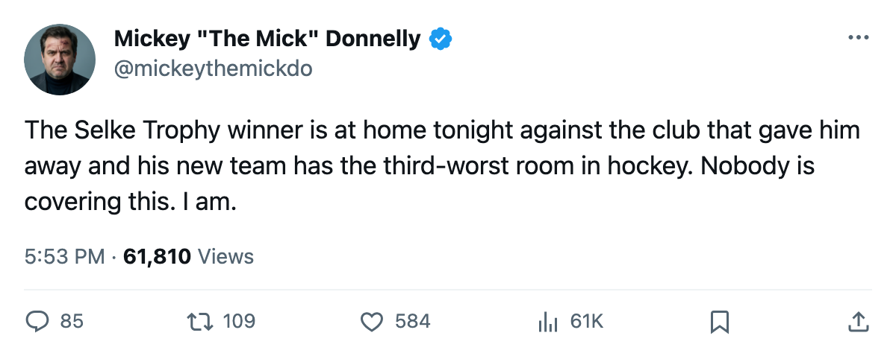
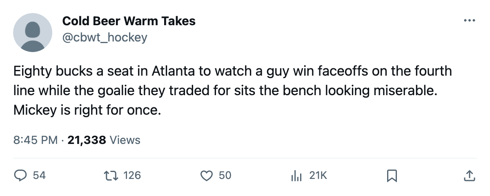

HE WON THE SELKE WITH ANA. TONIGHT HE SKATES AT HOME AGAINST THEM.
Six men moved between Anaheim and Atlanta on October 15. Neither club has a winning record. Tonight is the first meeting.
 Mickey "The Mick" DonnellyColumnist, ex-goalie · The Penalty Box
Mickey "The Mick" DonnellyColumnist, ex-goalie · The Penalty Box
 Rob Valicevic73 [1027] won the Selke Trophy with
Rob Valicevic73 [1027] won the Selke Trophy with  Mighty Ducks of Anaheim last season. Tonight, in Atlanta, he faces them for the first time since October 15, when six players changed sweaters between these two clubs.
Mighty Ducks of Anaheim last season. Tonight, in Atlanta, he faces them for the first time since October 15, when six players changed sweaters between these two clubs.
Neither team has a winning record. Mighty Ducks of Anaheim sits at 4-10-1 with 15 points.  Atlanta Thrashers is 5-9-2 with 12. The October deal changed nothing except the name across the shoulders. Tonight we see what came of it.
Atlanta Thrashers is 5-9-2 with 12. The October deal changed nothing except the name across the shoulders. Tonight we see what came of it.
Valicevic [1027] shut down the other team's top forward last season and the Bureau crowned him the best defensive forward in this league. Now he skates in Atlanta, where the payroll is $40.34M, the ticket is $80, and the record reads 5-9-2. He is playing against the club that gave him away, in his own building, for the first time.
The other side of that October date belongs to  Vyacheslav Kozlov78 [512]. Thirty-three years old. The Bureau has him at 76. He has 19 points in 17 games, a 92-point pace. The best player either club got from that swap is wearing Anaheim's sweater and putting up numbers a 33-year-old second-liner has no business putting up, and Anaheim still has 15 points to show for the whole roster.
Vyacheslav Kozlov78 [512]. Thirty-three years old. The Bureau has him at 76. He has 19 points in 17 games, a 92-point pace. The best player either club got from that swap is wearing Anaheim's sweater and putting up numbers a 33-year-old second-liner has no business putting up, and Anaheim still has 15 points to show for the whole roster.
Then there is  Martin Gerber76 [200]. The Bureau's Morale Scale reads 72, dead last in this league, tied with three others. He arrived in Atlanta on October 15 on a $1.12M deal with 2 years left on it. He has not appeared in a box score since. Atlanta Thrashers's club average sits at 87.6, the third-worst room in hockey.
Martin Gerber76 [200]. The Bureau's Morale Scale reads 72, dead last in this league, tied with three others. He arrived in Atlanta on October 15 on a $1.12M deal with 2 years left on it. He has not appeared in a box score since. Atlanta Thrashers's club average sits at 87.6, the third-worst room in hockey.
 Daniel Tjarnqvist70 [1001], the third man who crossed from Atlanta to Anaheim, sits on the 3RD defense pair. Anaheim bought a 68-rated defenseman and buried him above a 65. Patrick Boileau70 [83], the other Atlanta body in Anaheim orange, is in the lineup tonight meeting his old club on the road.
Daniel Tjarnqvist70 [1001], the third man who crossed from Atlanta to Anaheim, sits on the 3RD defense pair. Anaheim bought a 68-rated defenseman and buried him above a 65. Patrick Boileau70 [83], the other Atlanta body in Anaheim orange, is in the lineup tonight meeting his old club on the road.
Both clubs charge you to watch this
| Club | Payroll | Points | $/Point | Record | Ticket | Home/Away split |
|---|---|---|---|---|---|---|
| ANA | $54.64M | 15 | $3.64M | 4-10-1 | $81 | 4-3 home, 3-8 away |
| ATL | $40.34M | 12 | $3.36M | 5-9-2 | $80 | 4-3 home, 1-8 away |
Anaheim pays $54.64M and has 4 wins. Atlanta pays $40.34M and has 5. Anaheim has a worse per-point cost, a bigger payroll, and fewer wins. Both clubs ask $80 or more per ticket. Both will be profitable. Neither will make the playoffs.
Tonight, Atlanta is 4-3 at home. Anaheim is 3-8 on the road. Valicevic [1027] gets his welcome and Anaheim gets a reminder of the Selke they handed away for a goalie who will not play and a defenseman they cannot put on the top pair. The room at 87.6 knows it too. The Morale Scale does not lie, and three men are at 72 in that locker room.

